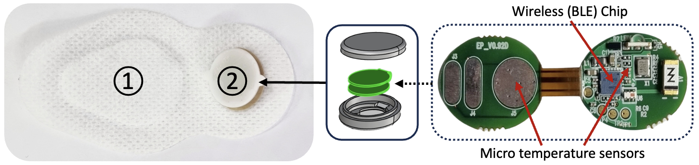

IoT Eye-Patch 실시간 모니터링 — 앱 & 의사용 웹
블루투스(BLE)와 이중 온도 센서 데이터를 앱으로 수집해 15초 κ°„κ²©μΌλ΅ 서버에 μ „μ†΅, 의사용 웹에서 μΊλ¦°λ”Β·κ·Έλν”„λ΅ 착용 순응도를 확인/처방하도록 구현.
BLE
Mobile App
Web Dashboard
Charts